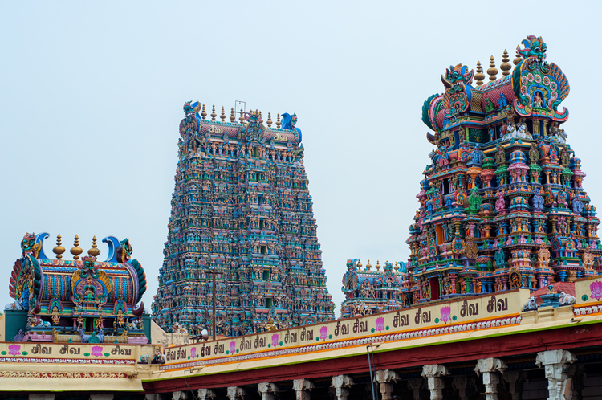

Top places to visit in Tamilnadu
1.Kanchipuram
The city of Kanchipuram is located on the shores of the Vegavathy River. The city has seen a number of ruling dynasties and monarchies such as the Pandya, Cholas, the Vijaynagar Empire, the Carnatic kingdom and the British monarchy. Kanchipuram since medieval times has been significant as the educational center and was known as the place for learning. The city is also famous for its various temples that are built in the Dravidian style of architecture and display amazing stone carvings. Kanchipuram has been an important city and has been mentioned in texts dating back to the Maurya Period (325-185 BC) and has been constantly mentioned as a city like no other in the Dravidian Kingdom. Kanchipuram apart from its various temples is also known for its medicinal herbs, this fact has been vouched for by the ancient texts as well. One of the major products of Kanchipuram is its specialized silk and more than 5000 families residing here are involved in silk weaving and famous for the “Kanchipuram silk Saris”. The place is rich in both natural and manmade attractions and has a distinct culture that one must experience. With its various Temples, bird Sanctuary, beaches, backwaters etc. makes the city a must visit.
2.Kanyakumari
The southernmost tip of mainland India, Kanyakumari was formerly known by the name Cape Comorin. The ancient town of Kanyakumari was an important site during the Reign of the Chola, Chera and Pandya dynasty. The town is famous for its beautiful beaches, temples, monuments and cultural centers. The town is also famous for its distinctive culture and hospitable people. The place due to its unique location witnesses a marvel like only a few places in the world has seen i.e. the sunrise and the sunset can be viewed at the same beach. The town lays at the confluence of three bodies of water namely the Indian Ocean, the Arabian Sea and the Bay of Bengal and is thus considered an important pilgrimage site in the south of India. The temples here are built in Dravidian style of architecture. The various south Indian delicacies served here are great and light on the stomach and include some of the south Indian classics like Sambhar, Idli and Dosa etc. a trip to this town is sure to refresh your senses.
3.Kodaikanal
The town is also referred to as the ‘Princess of the Hill stations’ with its name meaning ‘the Gift of the Forest’. It is a small hill station with an average elevation of 2,331 meters above sea level. The place is surrounded by thick forests and is located at the top of the Palani Hills. The establishment of the hill station dates back to 1845 which was founded as a refuge from the heat and the diseases of the tropical plains. The town is a major tourist attraction and tourism industry is the source of the majority of the town’s economy. Kodaikanal is famous for its scenic beauty and has a number of natural attractions that is the reason for its high tourist population. The lakes, parks and different waterfalls along with the rich abundance of flora and fauna, the town, is indeed the gift of the forests. The place is a home to many natural marvels and phenomena such as the blooming of the rare Kurinji Flower which only blooms once in 12 years and is said to cover the entire valley in blue. With its various flora and natural and manmade attractions to enjoy, Kodaikanal will make you want to stay
4.Madurai
The 3rd largest city in Tamil Nadu, Madurai is also one of the oldest inhabited cities in the world. The place has been mentioned by many such as Kautilya and Megasthenes. The city has been ruled by both the Pandya and the Chola dynasties. The city houses a number of important and magnificent temples that it is built around. Geographically the city of Madurai lies on the fertile plains near the river Vaigai which divides the city in two parts. The land is thus mainly used for agriculture and the major supplier for paddy crops such as rice in India. The majority of tourists who come to Madurai come to visit the various temples that enshrine this ancient city. The Meenakshi Ammam Temple is of prime importance here as it has been mentioned in almost all the ancient texts and is considered as the prime pilgrim spot for the Tamil people. The Temple complex consists of 27 different temples and the highest tower with the height of 51.9 meters high crowns the place. Many different monuments and temples are also a must visit along with the various festivals celebrated here. The town of Madurai is a spiritual experience in itself.
5.Mahabalipuram
Also known as Mamallapuram, the city of Mahabalipuram is famous for its ancient and cultural heritage. The city of Mahabalipuram was a prominent sea port dating back to 7th century AD and was ruled by the Pallava Dynasty. The place is famous for its monuments and is classified among the UNESCO world heritage sites. Almost all of the monuments are carved out of Granite and display the brilliance of Dravidian style architecture.
The town is otherwise a small one and the best way to get around it either by foot or bike rental. The attractions in the whole town can be covered in a day or two. The city is bustling with tourists most times of the year except monsoons. The amazing location of this place adds to the charm of the monuments and the intricate carvings. The temples here are a marvel to behold and with the aid of a knowledgeable tour guide one can totally get lost in the ancient stories behind each of the monuments.
6.Ooty
The Capital of the Nilgiris District, Ooty or Ootacamund is one of the top visited hill stations in India. The place lies in the heart of the Nilgiris Mountains with an average elevation of 2,240 meters above sea level. The place is characterized by the blue smoky mist from the thick eucalyptus forests and is also known to house the rare kurunji flower. The town’s major source of economy, like most hill stations is tourism. Many officials of the British government described the likeliness of this place to resemble Switzerland. Despite of being located in the tropical region of India, Ooty enjoys a pleasant and mild climate throughout the year, with chilly nights. The best time to visit is between the months of December till February and is frequented by tourists all around. The various lakes, mountains, gardens and valleys are amazing places to visit. The different peaks are great spots for trekking and the lakes make amazing camping and picnic spots. A visit to Ooty
7.Vellore
Also known as, the Fort city, Vellore is located at the banks of Palar River at the North-eastern part of Tamil Nadu. The city came under the reign of various kingdoms and monarchies such as the Pallava, the Chola, the Carnatic Kingdom and the British. The place’s name comes from the Monolithic fort of Vellore which was built in the 16th century by the Vijaynagar Kings and is constructed out of granite. The fort complex has a Christian church courtesy the British, a Mosque and an old Hindu Temple which has some of the most magnificent carvings. The place has a lot of historic relevance as well, as the fort of Vellore is said to have housed Tipu sultan’s family during the British Rule. Apart from the fort there are several other attractions that have made it an important tourist destination. The various temples with a brilliant display of carvings and Dravidian Style architecture, the picturesque hill station of Yelagiri, the churches and mosques and various shopping hotspots has made it a must visit place in Tamil Nadu.